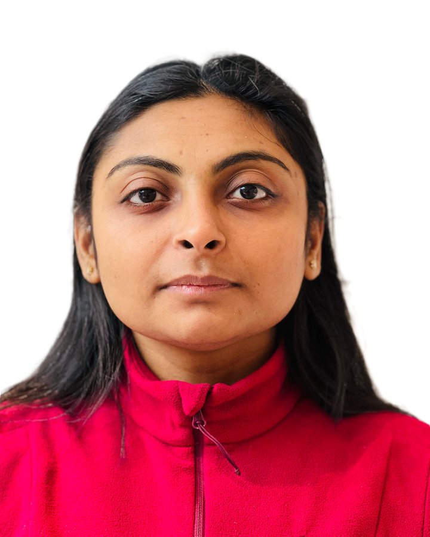

Nisha Patel
PhD researcher in urban climate modelling and remote sensing
I study how cities heat up and how design can cool them down, using microclimate simulations, satellite data and machine learning.
- University of Kassel, Germany
- Research Associate since 2022
- English, German, Hindi, Gujarati

About
I’m an atmospheric scientist with more than eight years of experience across meteorology, remote sensing and urban climate modelling. At the University of Kassel I turn large environmental datasets and machine-learning methods into guidance for climate-resilient city planning.
My path runs from physics in Gujarat, through meteorology at KIT and Leibniz Universität Hannover, to doctoral research in Germany, with research stays at IIT Madras and the Physical Research Laboratory in India.
Urban microclimate modelling
ENVI-met simulations and field campaigns in Kassel to test heat-mitigation and adaptation measures.
Machine learning for upscaling
Models that extend point-based microclimate simulations to city-wide predictions.
Remote sensing and the atmosphere
Satellite, lidar and reanalysis data, from solar irradiance to middle-atmosphere ozone.
Publications
Towards Rapid and Data-Efficient Urban Climate Assessment using Machine Learning Frameworks. Patel, N., Mackey, L., Zhong, J., Lu, Y., Jaenicke, B., Burghardt, R., Pericleous, K. Computational Urban Science, Springer. Submitted
Entwicklung von messbaren Zielen, Indikatoren und Maßnahmen der Klimaanpassung durch Stadtentwicklung. Otto, F., Burghardt, R., Jänicke, B., Patel, N. (2026). In: Altrock, U., et al., Stadterneuerung und Klimawandel. Jahrbuch Stadterneuerung. Springer VS, Wiesbaden. DOI
Assessing progress in urban climate adaptation: A review of indicators for heat and water-sensitive urban development. Patel, N., Jänicke, B., Burghardt, R., Vulova, S., Otto, F. (2025). Climate Resilience and Sustainability. DOI
Analysis of the middle atmospheric ozone using SABER observations: A study over mid-latitudes in the Northern and Southern Hemisphere. Joshi, V., Sharma, S. K., Kumar, K. N., Patel, N., Kumar, P., Ghosh, P., Bencherif, H., Jethva, C., Vaishnav, R. (2020). Climate Dynamics. DOI
Observations of middle atmospheric seasonal variations and study of atmospheric oscillations at equatorial regions. Patel, N., Sharma, S., Joshi, V., Kumar, P., Ojha, N., Kumar, K. N., Chandra, H., Beig, G. (2019). Journal of Atmospheric and Solar-Terrestrial Physics. DOI
The full list is on Google Scholar.
Experience
Research Associate
University of Kassel, Germany
- Design and run ENVI-met microclimate simulations to evaluate heat-mitigation and adaptation strategies for urban neighbourhoods.
- Develop machine-learning models that upscale point-based simulations to city-wide predictions.
- Collect and analyse field measurements of urban microclimates across Kassel.
- Co-authored a peer-reviewed review of indicators for heat- and water-sensitive urban development (2025).
Student Assistant
Karlsruhe Institute of Technology (KIT), Germany
- Managed and processed ice-nucleating particle (INP) sample databases for ongoing aerosol research.
- Produced daily, monthly and yearly time series of temperature and INP concentration, and presented findings to the group.
Project Associate
Indian Institute of Technology Madras, India
- Ran WRF simulations with ECMWF and NCEP reanalysis data and applied the GEOS-Chem chemical-transport model.
- Analysed data for air-quality and atmospheric-chemistry research.
Student Visitor
Physical Research Laboratory (PRL), India
- Collected and visualised ground-based data from Raman Lidar, Rayleigh Lidar and Ceilometer instruments.
- Supported instrument operation and data quality control.
Teaching
Teaching Assistant
University of Kassel
- Teach ENVI-met microclimate simulation (winter semester).
- Lead measurement and data-analysis practicals for the Kassel field campaigns (summer semester).
Science Educator
Vikram A. Sarabhai Community Science Centre, India
Taught physics, astronomy and rocketry, and mentored student project groups in hands-on lab work.
Education
PhD, Urban Climate Modelling
University of Kassel, Germany
Climate adaptation in cities, climate-resilient urban design, and machine-learning methods for upscaling microclimate models.
M.Sc., Meteorology
Karlsruhe Institute of Technology & Leibniz Universität Hannover
Thesis: global horizontal irradiance from Meteosat satellite data, validated against ground-based measurements.
M.Sc., Physics
M.M. Patel Institute of Science and Research, Gujarat, India
Thesis: atmospheric dynamics from SABER satellite temperature and ozone data (2008–2018).
B.Sc., Physics
Gujarat University, India
Scholarships and awards
- M34impact (Multi-scale, Multi-disciplinary Modelling for Impact) Research Scholarship, 2026
- Indo-German Centre for Sustainability, DAAD Award, 2024
- ASL International Scholarship for Doctoral Students, 2023
- World Landscape Architecture Honour Award, 2023
Certifications
- Climate-Related Financial Risk Act (SB 261), Imperial Business School, May 2026
- Google Data Analytics Professional Certificate, 2021–2022
Skills
- Programming and analysis
- Python, MATLAB, R, SQL
- Modelling and GIS
- ENVI-met, WRF, QGIS, ArcGIS
- Visualisation
- Tableau, MS Office
- Languages
- English (fluent), German (B2), Hindi (fluent), Gujarati (native)
Contact
I’m happy to hear from researchers, planners and students interested in urban climate adaptation.